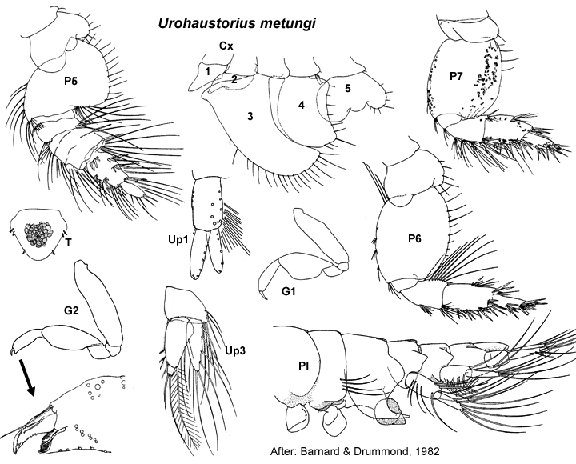

Urohaustorius metungi Fearn-Wannan, 1968: 31, figs 1–3. –Barnard & Drummond, 1982: 97, figs 33–35.
Type Material. Lodged in the NMV.
Type Locality. Tambo Bay, Lake King, Victoria, Australia.
Description.Antenna 1 peduncular article 1 setal row with
only slender setae, proximal pair of setae simple; accessory flagellum
6 -articulate; primary flagellum 8 -articulate. Antenna 2 peduncular article 4 proximal part of row evenly angled; peduncle article 5 not bulbous in male. Mandible incisors simple. Maxilla 1 palp with some setae displaced subapically.
Gnathopod 1 simple; coxa small, trapezoidal, subequal in size to coxa 2. Gnathopod 2 minutely chelate, propodus palm obtuse. Pereopod 3 coxa large, larger than coxa 4. Pereopod 4 coxa large, posteroventral lobe absent. Pereopod 5 basis with very weakly developed mediofacial brush of setae; dactylus with robust setae usually arranged in single row. Pereopod 6 basis fully expanded; dactylus vestigial. Pereopod 7 coxa without long posterior spine; basis fully expanded, with slender setae along posteroproximal margin; dactylus vestigial.
Epimeron 2 subequal in size to epimeron 3, posteroventral corner broadly rounded, more setose than epimeron 3. Epimeron 3 posteroventral corner with large spine. Uropod 1 inner ramus slightly shorter than outer ramus, not fused to peduncle. Uropod 2 inner ramus slightly shorter than outer ramus, not fused to peduncle. Telson longer than broad, entire.
Distribution.Australia: Gippsland Lakes, Victoria to Moreton Bay, Queensland.

___________________________
This
publication should be cited as: Kilgallen, N.M. & Lowry, J.K. 2008.
Urohaustoriidae (Amphipoda): World Genera and Species. Version 1. 1
January 2008. http://crustacea.net.